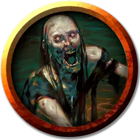

Зомби Страда
Strahd Zombie
Средняя Нежить, без мировоззрения

Класс Доспеха 8
Хиты 30 (4к8 + 12)
Скорость 20 футов
| мод | спас | ||
|---|---|---|---|
| СИЛ | 13 | +1 | +1 |
| ЛОВ | 6 | −2 | −2 |
| ТЕЛ | 16 | +3 | +3 |
| мод | спас | ||
|---|---|---|---|
| ИНТ | 3 | −4 | −4 |
| МДР | 6 | −2 | +0 |
| ХАР | 5 | −3 | −3 |
Иммунитет к урону яд
Иммунитет к состояниям отравление
Чувства тёмное зрение 60 футов, пассивное Восприятие 8
Языки Понимает язык, который знал при жизни, но не может говорить
Опасность 1 (200 опыта)
Бонус мастерства +2
Особенности
Отвратительные конечности. Если зомби получает за раз как минимум 5 дробящего или рубящего урона, бросьте к20, чтобы определить, что с ним происходит:
• 1-8: У зомби отрублена одна нога, если у него оставалась хотя бы одна.
• 9–16: У зомби отрублена одна рука, если у него оставалась хотя бы одна.
• 17-20: Зомби обезглавлен.
Если его хиты снижаются до 0, все части зомби погибают. До тех пор пока этого не произошло, отрезанные части действуют в инициативу зомби и имеют свои собственные действия. Отрезанные части имеют КД 8. Любой урон, который они получают вычитается из хитов зомби
Отрубленная нога не может атаковать, её скорость – 5 футов.
У отрубленной руки скорость 5 футов, и она может совершить одну атаку когтями в свой ход с помехой. При потере зомби руки он также теряет одну атаку когтями.
Если отрублена голова, зомби теряет атаку укусом и его туловище считается ослеплённым, если только голова не видит его. У отрубленной головы скорость 0 футов и. Она может совершить атаку укусом, но только если цель находится в её клетке.
Если зомби потерял ногу, его скорость снижается вдвое. Если обе ноги — он падает ничком. Если при этом у него есть руки, он может ползти. Если рука при этом осталась только одна, он по-прежнему может ползти, но скорость уменьшается вдвое. Без рук и без ног его скорость становится равной 0, и зомби не получает никаких бонусов к скорости.
Действия
Мультиатака. . Зомби совершает три атаки: одну укусом и две своими когтями.
Укус. . Рукопашная атака оружием: +3 к попаданию, досягаемость 5 футов, одна цель. Попадание: 3 (1к4 + 1) колющий урон.
Когти. . Рукопашная атака оружием: +3 к попаданию, досягаемость 5 футов, одна цель. Попадание: 4 (1к6 + 1) рубящий урон.
Описание
Зомби Страда – это нежить, которая служит вампиру Страду вон Заровичу. Созданные из долгоживущих охранников замка Равенлофт, они были вызваны с помощью темной магии самим Страдом.
Омерзительные конечности. Серо-зеленая плоть зомби Страда выглядит мягкой, и его кости кажутся хрупкими. Любой удачный удар от дробящего или рубящего оружия отделяет часть тела зомби. Зомби Страда страдают от ужасной некромантской магии, которая позволяет их разорванным частям тела продолжать атаковать. Все части зомби Страда считаются одним и тем же существом, поэтому повреждение какой-либо части наносит урон всему существу.
Природа нежити. Зомби Страда не нуждаются в воздухе и сне.